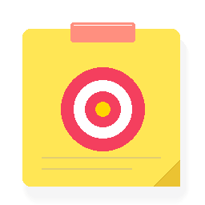

Manage all your paper sticky notes, deadlines, and screen reminders in one temporary command center.
Create a sticky goal to pin your priorities directly on your laptop screen!
Set your goal, todos, paper color, and deadline. Then add it directly to your All Notes section.
Customize reminders, audio chimes, defaults, and desktop shortcuts.
Play pleasant audio cues for deadlines, checklist checks, and completions.
Volume of chimes and reminder alerts.
Experience the built-in tactile sound feedback.
Show native banner alerts when deadlines approach or become overdue.
New stickies automatically float over other application windows.
When you reopen or unlock your laptop, play a welcome chime and sequentially pop up each active goal with a highlight reminder.
Every 1 hour while working, notify you: "Don't forget your goal! Only X days/hours remained to finish..."
How often to check in with a goal mindfulness notification.
Preview the exact sequence and notification on your screen right now.